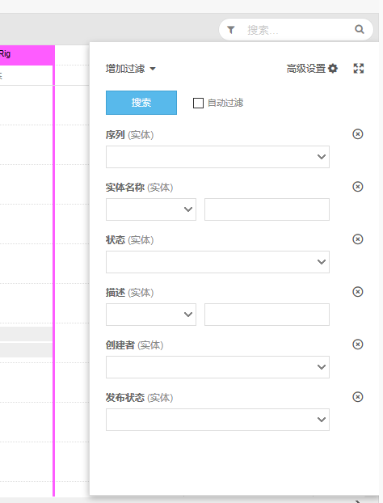
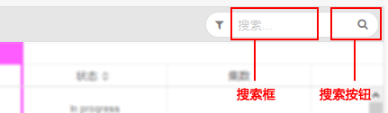
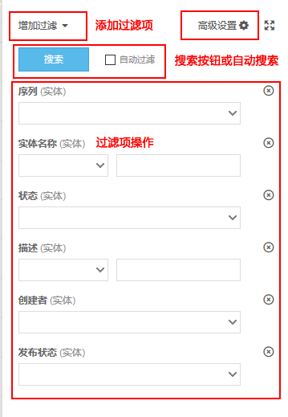
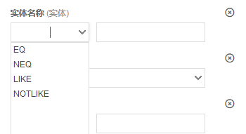
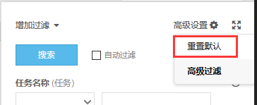
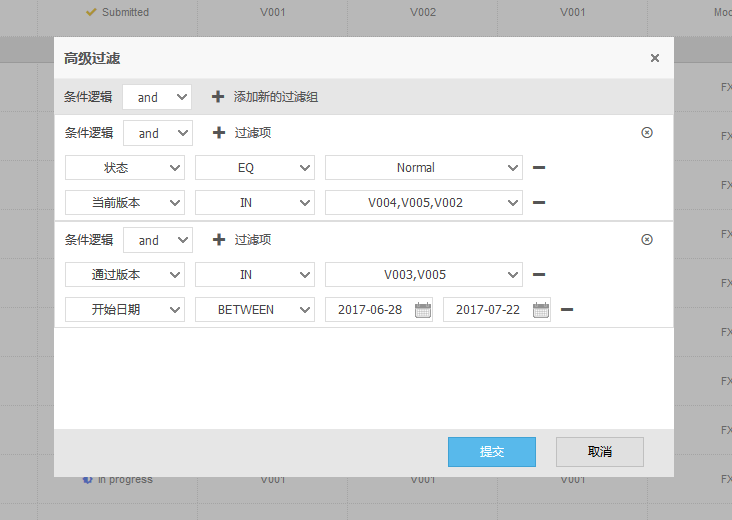

模块简介
此面板为数据表格通用操作面板，分为三层操作颗粒度。
■ 固定搜索当前页面实体名称的搜索框。
■ 点击过滤按钮打开过滤组合搜索区域。
■ 点击高级搜索，可以通过Strack提供的界面，组装复杂查询条件。
页面预览

固定搜索框
- 在输入框中输入您想查询当前所在实体的名称，支持模糊搜索（即例如CG-001，输入CG则可以与之匹配）。
- 点击输入框右侧搜索按钮进行搜索操作。

普通搜索面板
通过选择增加过滤下拉菜单增加过滤项，设置好过滤项，点击搜索按钮或者勾选自动过滤进行搜索。当前页面过滤项直接为与逻辑。

1. 搜索表达式说明

| 表达式 | 含义 | 协助记忆 |
|---|---|---|
| EQ | 等于（=） | equal |
| NEQ | 不等于（<>） | no equal |
| GT | 大于（>） | greater |
| EGT | 大于等于（>=） | equal or greater |
| LT | 小于（<） | less than |
| ELT | 小于等于（<=） | equal or less than |
| LIKE | 模糊查询，相似 | like |
| NOTLIKE | 模糊查询，不相似 | no like |
| IN | IN 查询 | in |
| NOT IN | （不在）IN 查询 | no in |
| BETWEEN | 区间查询 | between |
2. 重置过滤项
点击重置默认，重置当前表格数据。

高级搜索面板
高级搜索添加多个过滤组，通过设置不同组之间和组内条件逻辑，可以组装非常复杂的过滤逻辑。
